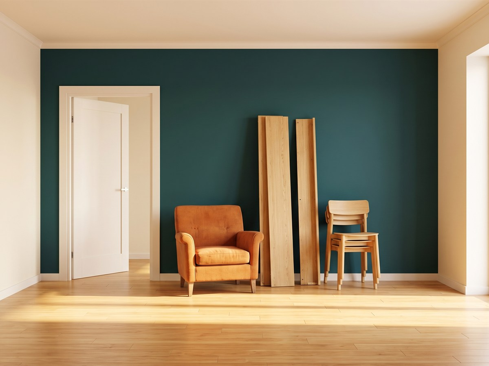
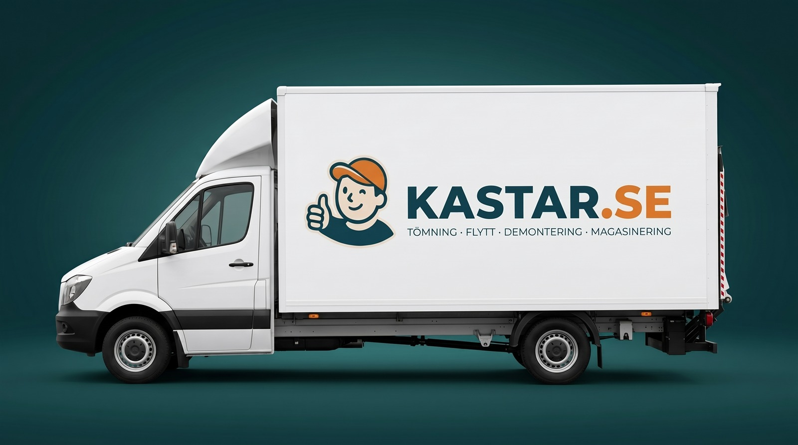
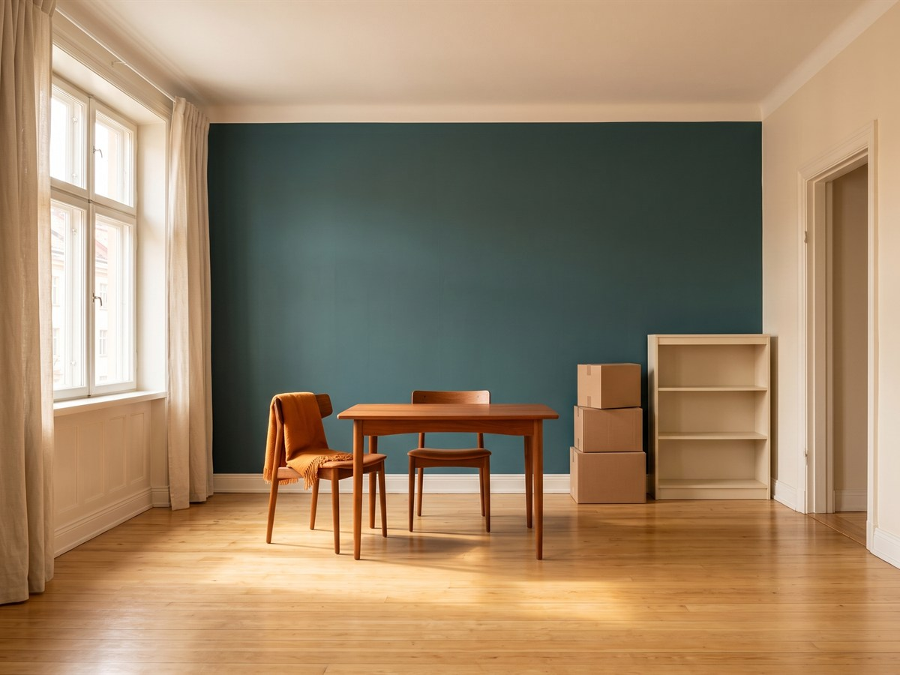
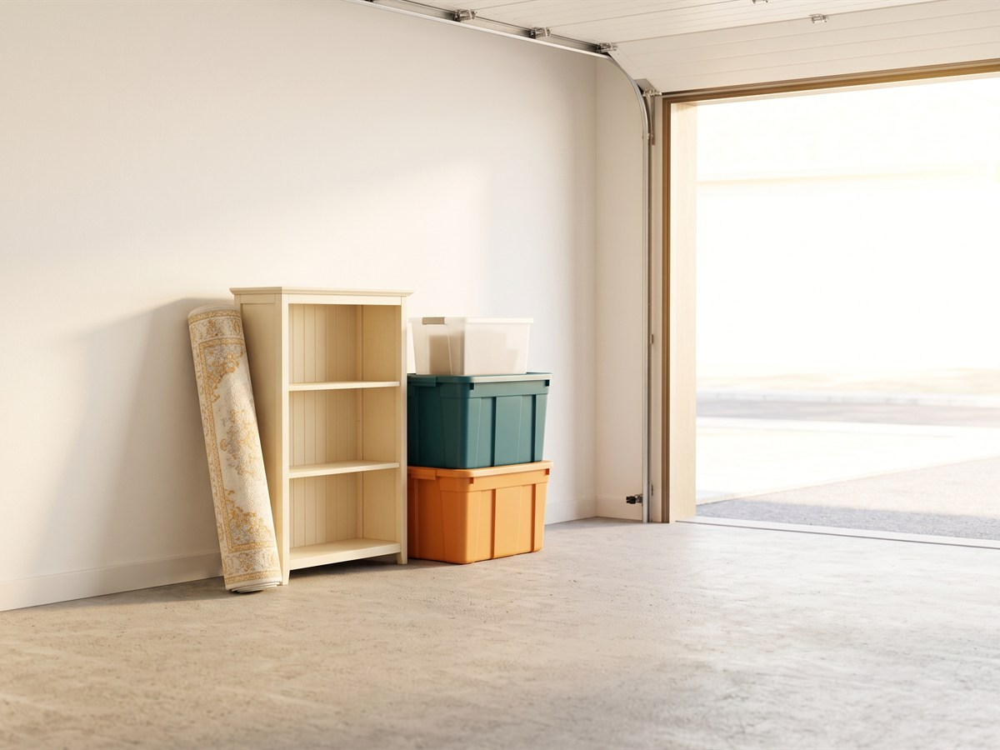
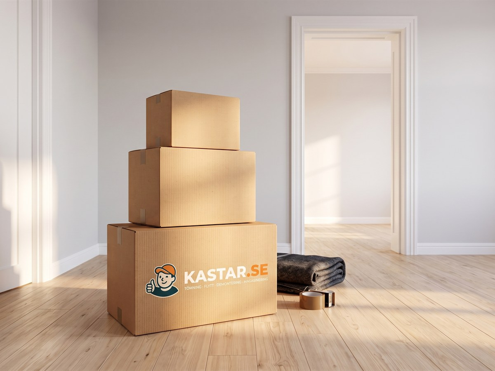
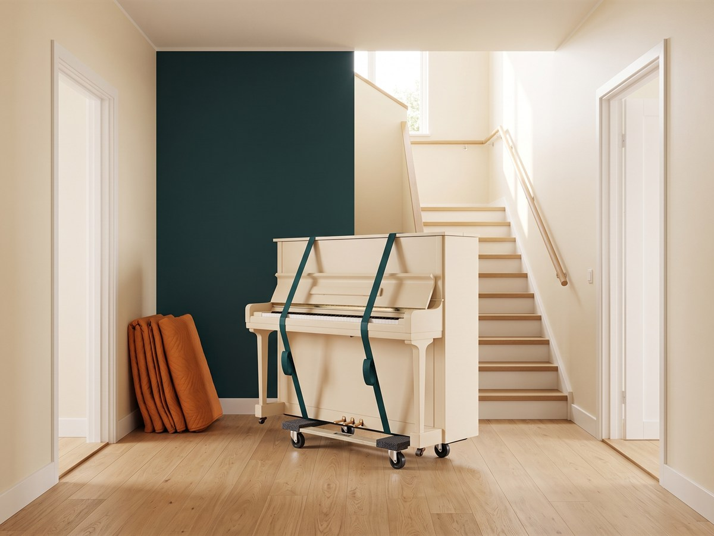
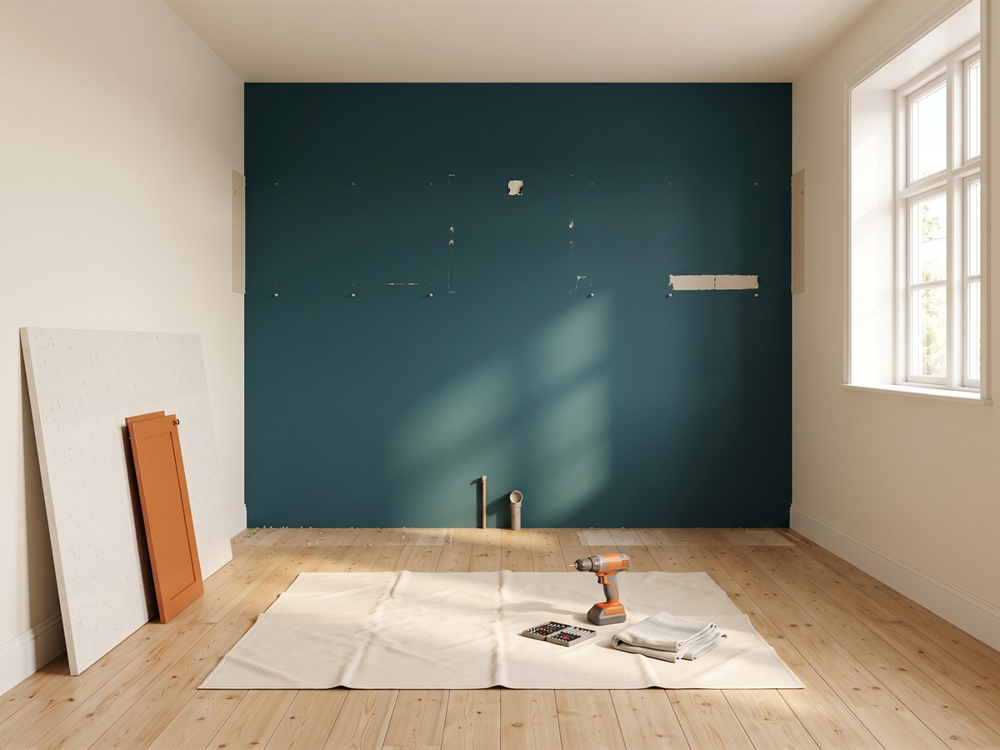
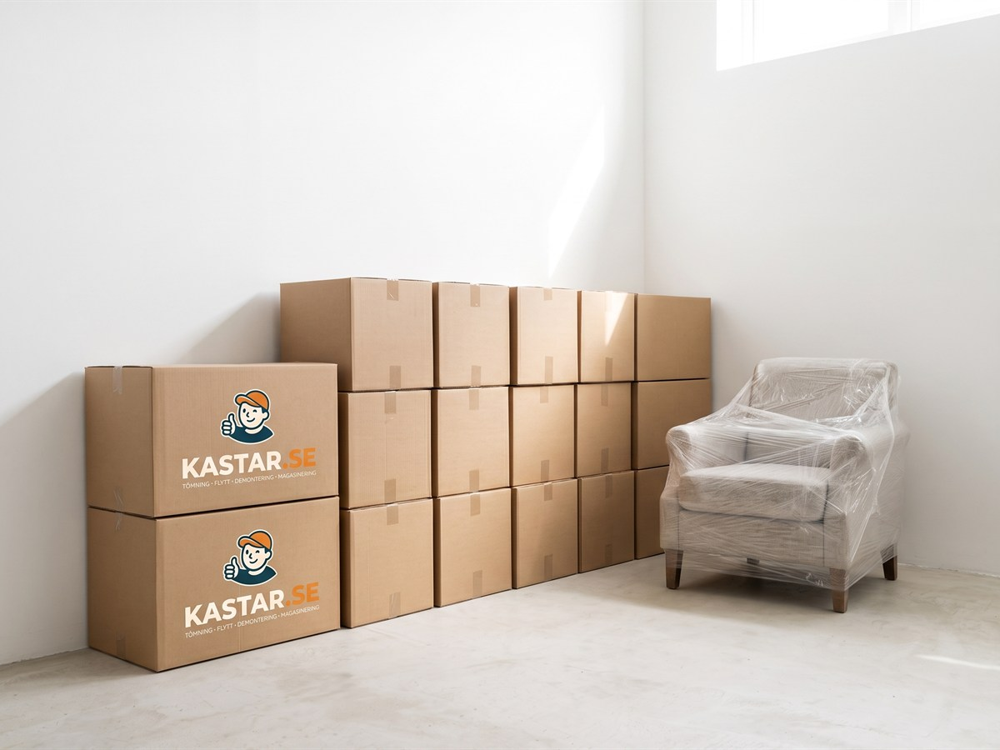
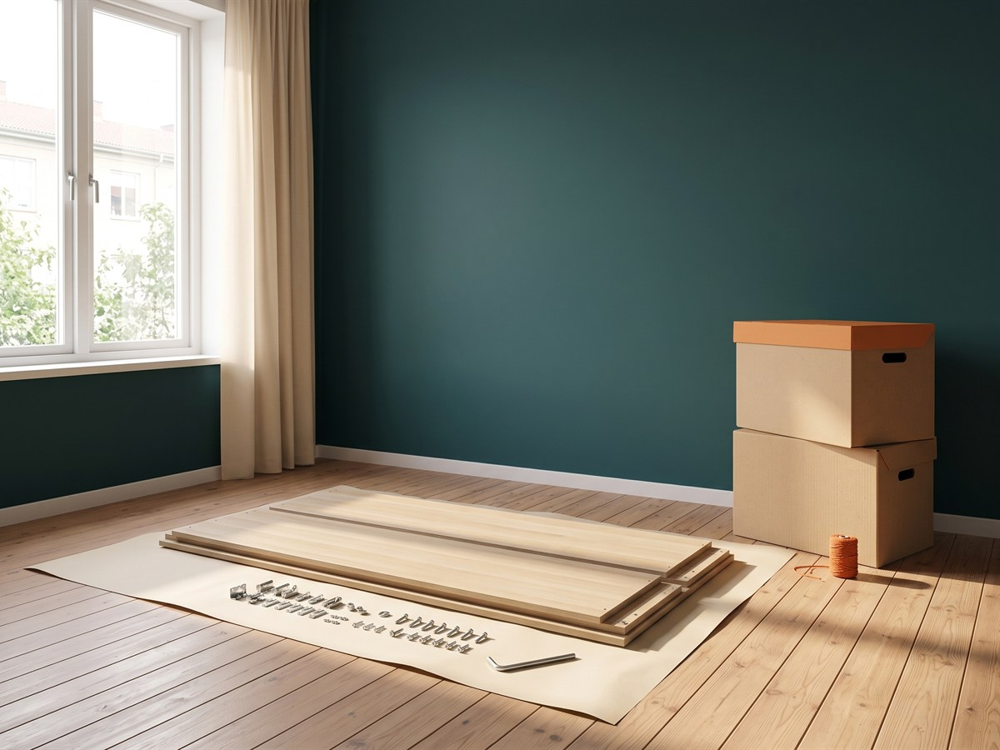

Bortforsling av möbler och inventarier
Vi hämtar och transporterar bort möbler och inventarier för att frigöra utrymme i ditt hem eller företag.
Tömning & bortforsling i Stockholm och Uppsala
Från en enstaka soffa till ett helt dödsbo. Vi är på plats snabbt, håller vad vi lovar och städar efter oss.
Priser
Du betalar efter hur mycket plats dina saker tar i bilen.

Vi sorterar och återanvänder så mycket som möjligt.
Du får priset skriftligt innan jobbet startar. Inga påslag efteråt.
Vi kommer när det passar dig – ofta inom 24–48 h.
Stockholm, Uppsala med omnejd.
Skicka några bilder på det som ska bort via sms eller formulär.
Vi uppskattar mängden och ger dig ett fast pris innan vi kommer.
Vi bär, lastar, sorterar och tar hand om allt – du slipper jobbet.
Priserna är frånpriser inklusive moms. Extra kostnad kan tillkomma vid mycket tungt material, långa bäravstånd, många trappor eller särskilda avfallsavgifter.
Våra tjänster

Vi hämtar och transporterar bort möbler och inventarier för att frigöra utrymme i ditt hem eller företag.

Vi hjälper med tömning av hela bostäder och dödsbon på ett respektfullt och effektivt sätt.

Snabb och smidig bortforsling från garage, förråd och kontorslokaler för en renare arbets- och förvaringsmiljö.

Från etta till villa, från kontor till lager. Vi flyttar allt som ska med, och tar hand om det som inte ska följa med.

Piano, kassaskåp och andra tunga pjäser flyttas säkert med rätt utrustning och vana – även genom trapphus där det är ont om plats.

Vi monterar ned kök, golv och icke-bärande väggar – och kör bort allt direkt, så du slipper container och flera leverantörer.

Behöver du förvara bohaget en period? Vi hämtar, magasinerar och levererar tillbaka när du är redo – tryggt och torrt.

Hjälp med det tunga och tidsödande – bära, rensa, sortera och montera inför flytt, försäljning eller visning.

Köpt något som ska hämtas? Vi hämtar hos säljaren och levererar hem till dörren – möbler, vitvaror, byggmaterial eller enstaka paket. Fast pris efter sträcka och storlek.

Flytt till en annan stad? Vi kör hela vägen med samma bil och samma personal, från lastning till urlastning. Inga omlastningar och ingen väntan på en terminal.
Varför välja oss
Du får priset skriftligt innan jobbet startar. Inga påslag efteråt och inga överraskningar på fakturan.
Vår flexibilitet gäller även kvällar och helger. Drar något över hör du det från oss innan du behöver ringa och fråga.
Vi lämnar utrymmet tomt och sopat. Flyttstädning ingår inte, men du ska aldrig behöva plocka undan efter oss.
Det som går att skänka eller återvinna sorteras ut. Du får veta vart sakerna tar vägen.
FAQ
Vi räknar på tre sätt beroende på jobbet. Bortforsling och tömning går på volym, från 1 695 kr för ett par kubik till 7 795 kr för en fullastad bil. Flytt, bärhjälp och praktisk hjälp går på tid – 1 195 kr i timmen för två personer med bil, 595 kr för en person. Nedmontering och rivning går på fast pris per objekt, från 3 900 kr för ett kök. Du får alltid ett fast pris innan vi börjar, och vi delar upp offerten i arbete och transport så att du ser vilken del som är avdragsgill.
Skicka bilder på det som ska göras via formuläret, sms eller mejl. Bilder räcker nästan alltid. Vid större tömningar kommer vi gärna ut och tittar kostnadsfritt först.
Ofta inom några dagar, ibland samma vecka. Har du bråttom, ring så säger vi direkt vad som går. Kvällar och helger fungerar bra.
Ja, det är en av våra vanligaste uppgifter. Vi går igenom bostaden tillsammans med dig, sorterar ut det som ska sparas, skänkas eller säljas vidare, och tömmer resten. En normalstor tvåa landar oftast på 12–16 kubik, alltså 5 995 till 7 795 kr. Tömning och bortforsling är avfallshantering och ger därför inget RUT-avdrag.
Flytthjälp kostar 1 195 kr i timmen för två personer med bil, minst tre timmar. Flytt mellan två bostäder är RUT-grundande, så halva arbetskostnaden dras direkt på fakturan. En tvårumslägenhet tar normalt fyra till sex timmar – 4 780 till 7 170 kr, alltså 2 390 till 3 585 kr efter RUT.
Ja, i hela Sverige, och ja, RUT gäller. Vi kör hela vägen med samma bil och samma personal – inga omlastningar och ingen väntan på en terminal. En tvårumslägenhet Stockholm–Göteborg landar normalt på 14 000 till 18 000 kr, varav arbetskostnaden är RUT-grundande medan kilometerersättningen inte är det. På ett jobb i den storleken brukar avdraget landa på flera tusen kronor. Vi specificerar alltid delarna var för sig i offerten.
Ja. Vi har pianovagn, remmar och skydd, och vi skyddar trapphus och dörrfoder. Från 2 995 kr inom samma ort, entréplan till entréplan, plus 595 kr per våning utan hiss. Ingår flytten i en flytt mellan två bostäder är arbetet RUT-grundande. Föremål över 300 kg eller trånga bärvägar offererar vi separat efter bilder.
Ja. Vi hämtar hos säljaren och levererar hem till dörren – möbler, vitvaror, byggmaterial eller enstaka paket. Skicka länken till annonsen så får du ett fast pris. Hämtning inom Stockholm eller Uppsala börjar på 1 195 kr. Ren transport ger inget RUT-avdrag, men ska möbeln också bäras in och monteras är den delen avdragsgill.
Ja. Vi monterar ned kök, parkett, kakel och icke-bärande väggar och kör bort massorna direkt, så du slipper container och flera leverantörer. Fast pris på arbetet, från 3 900 kr för ett kök. Massorna räknas på vikt, 295 kr per påbörjat 100 kg, eftersom rivningsavfall väger fem till tio gånger mer än vanligt bohag.
Ja, och i vårt eget lager – inte i en inhyrd box hos ett självförvaringsföretag som de flesta i branschen. Det betyder att du kommer åt dina saker med ett telefonsamtal i stället för att vara bunden till någon annans öppettider. Magasinering kostar 169 kr per kubikmeter och månad, minst fyra kubik och en månad. Vi hämtar, förvarar torrt och låst, och levererar tillbaka när du är redo. Sker hämtningen eller utkörningen i samband med en flytt mellan två bostäder är den transporten RUT-grundande – själva förvaringen är den inte.
Bärhjälp, rensning, sortering och montering eller nedmontering av möbler – inför flytt, försäljning eller visning. 595 kr i timmen för en person, minst två timmar. Behövs två personer gäller flyttpriset. Bärhjälp och möbelmontering i hemmet är RUT-grundande, så halva arbetskostnaden dras på fakturan.
Det som går att skänka eller återvinna sorteras ut och lämnas vidare. Resten körs till återvinningscentral. Du får veta vart sakerna tar vägen.
Nej. Asbest, tryckimpregnerat virke, färgburkar, kemikalier och lysrör hanterar vi inte. Vitvaror och elektronik går bra.
RUT ger femtio procent av arbetskostnaden, upp till 75 000 kronor per person och år. Det gäller flytt mellan två bostäder, transport till och från magasinering i samband med flytt, samt bärhjälp och möbelmontering i hemmet. Det gäller inte bortforsling, tömning, budtransport eller annan ren transport. Vi drar av beloppet direkt på fakturan – du lämnar bara personnummer och besked om hur mycket av ditt utrymme du använt i år.
Nej. Många lämnar en nyckel eller en portkod, och vi hör av oss när vi är klara. Bor du i en annan stad sköter vi hela jobbet på distans – du får bilder före och efter, och vi stämmer av på telefon.
Ja. Vi tömmer kontor, lokaler, förråd och gemensamhetsutrymmen, och kan hämta utanför kontorstid om verksamheten inte ska störas. RUT gäller bara privatpersoner, så för företagskunder tillkommer inget avdrag.
Med faktura efter utfört arbete, eller med Swish direkt på plats.
Hör av dig så tidigt du kan, så flyttar vi tiden. Avbokas det senare än ett dygn innan, eller om vi inte kommer in vid avtalad tid, debiteras en bomkörning på 1 500 kr.
Kontakta oss
Berätta kort vad du behöver hjälp med så återkommer vi snabbt med ett prisförslag.
ROT och RUT
Alla priser anges inklusive moms och utan avdrag. Uppfyller ditt uppdrag Skatteverkets villkor drar vi av ROT eller RUT direkt på fakturan. Vi delar alltid upp offerten i arbete och transport, så att du ser vilken del som är avdragsgill.